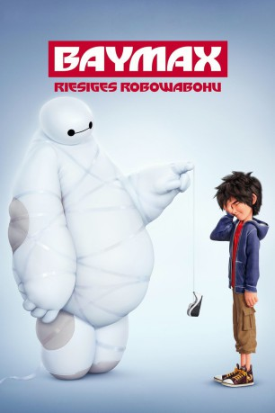

Alternativ: Big Hero 6
Auszeichnungen: 1 Oscars gewonnen gesehen am 11.02.2018
gesehen am 11.02.2018
 
 IMDB-Wertung: 7.8 / 10
IMDB-Wertung: 7.8 / 10  Metascore:
Metascore: 
Hiro Hamada ist ein brillanter Teenager und lebt in der futuristischen Stadt San Fransokyo ein relativ normales Leben. Zumindest solange, bis ihm sein Bruder Tadashi den aufblasbaren Roboter Baymax baut, zu dem Hiro schnell eine ganz besondere Beziehung entwickelt. Baymax' tatkräftige Unterstützung kann der aufgeweckte Junge definitiv gut gebrauchen, droht doch schon bald eine kriminelle Organisation damit, seine Heimatstadt zu zerstören. Mit der Hilfe von Baymax und seinen Freunden Go Go Tomago, Wasabi, Honey Lemon und Fred beschließt Hiro, alles zu tun, um die Katastrophe zu verhindern.
Jahr: 2014
Dauer: 102 Minuten
FSK: 6
Land: USA Studio: Walt Disney Studios Motion PicturesTonspuren: DTS - ,
Untertitel: Deutsch,
Auflösung: 1080p (1920x1080) Größe: 5529 MB
Genre: Animation/Trick, Action, Abenteuer, Komödie, Drama, Familie, Sci-Fi
Regisseur: Don Hall, Chris Williams
Drehbuch: Jordan Roberts, Robert L. Baird, Daniel Gerson, Man of Action, Steven T. Seagle
Soundtrack: Henry Jackman
Darsteller:
Datei: X:\Kinder Disney HD\2000-2018\Baymax - Riesiges Robowabohu (2014, FSK6, 1920x1080) 3D.mkv seit 08.03.2015
Festplatte: Kinder-Filme+Trick
 Es gibt insgesamt 45 Filme in der Gruppe 'Kinder Disney HD\2000-2018'
Es gibt insgesamt 45 Filme in der Gruppe 'Kinder Disney HD\2000-2018'